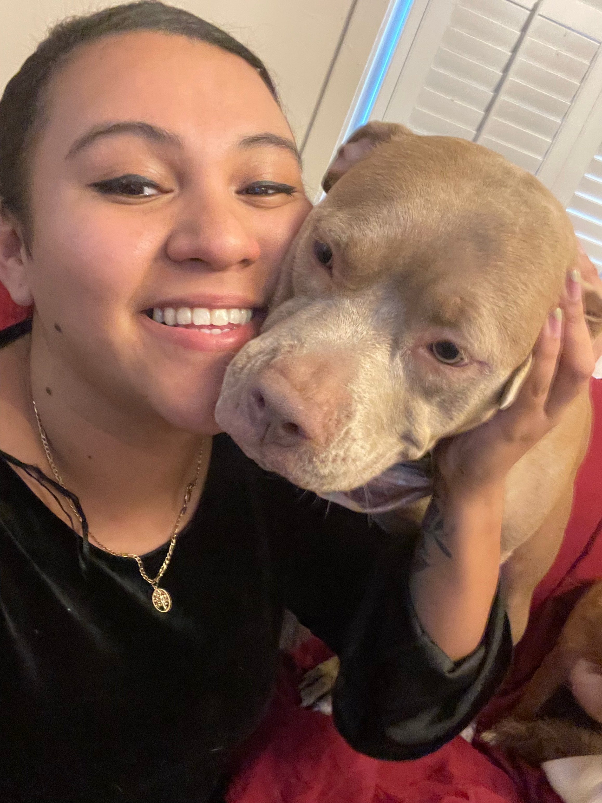

AI Introduction
Garcia, Fatima
I understand that what I put here is publicly available on the web and I won't put anything here I don't want the public to see - Fatima Garcia 8/31/2025
Fatima Garcia | Fatigued Grasshopper

Personal Background
I am from Jersey City, New Jersey, born and raised. I moved to Charlotte 4 years ago after I got out of a 6-year Army contract. I enjoy running, art, and music.
Professional Background
I have worked many roles including tutor, bass teacher, sailing instructor, social media specialist, IT specialist, VA customer service representative, BDC specialist, service desk analyst, and my most recent role is Senior Technical Support Specialist.
Academic Background
I have 5+ years in university. I have a BA in Psychology and am currently working on a BA in Biology to apply for dental school. I had certs (A+, Net+, Sec+, ITIL4), but they may be expired.
Background in This Subject
I have some experience in networking and general IT, but not much in coding.
Primary Computer Platform
MacOS
Courses I'm In & Why
- CHEM1252 - General Chemistry II: Required for dental school.
- PHYS1102L - Physics II Lab: Required for dental school.
- BIOL2259 - Microbiology: Core requirement for Biology degree.
- BIOL2259L - Microbiology Lab: Hands-on lab experience.
- ANTH2151 - General Archaeology: Elective I find interesting.
- ITCS1110 - Intro to Computer Science Principles: To broaden my technical skills and complement my IT background.
Funny / Interesting Fact
I'm pretty low-key right now. I enjoy binge-watching shows and playing Clash Royale.